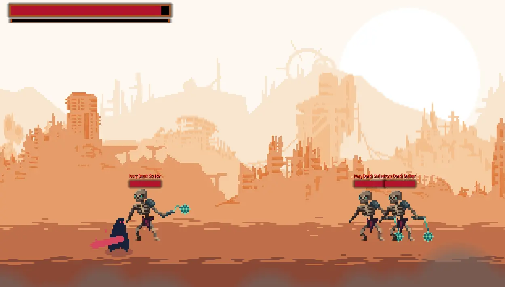

2D action game developed completely solo as a submission for Two Desperados' 2025. Game Jam

Theme of this game jam was "three rules", so I decided to use the rule of threes.
The rule of three is a writing principle which suggests that a trio of entities - events or characters - is more humorous, satisfying, or effective than other numbers. Having three entities combines brevity and rhythm with the smallest amount of information required to create a pattern.
We explore this idea in an action/adventure game where everything comes in triads.
When idle, enemies slowly walk toward the player's global position (from PlayerSingleton). Each enemy has a defined "chasing area". Once the player enters it, the enemy is triggered into a chasing state with faster movement and a different animation. If the player enters the "attacking area", the enemy switches to attacking state and deals a certain amount of damage every second. On death, a death animation plays; after the animation finishes the enemy node is safely removed from the scene.
Separate layers and masks are used for each collision area so they don't interfere. A layer represents the "realm" the area exists in; a mask represents which realms it checks for. Player and enemy hitboxes are activated only during the attacking state and deactivated on exit.
Layered backgrounds create a parallax effect. When a layer reaches a defined point it is duplicated across the X axis so it scrolls indefinitely. Each layer uses a different scale factor so it moves at a different speed. A separate "smog" layer has transparency and moves faster to appear closer to the camera.
Input detection is isolated in controller logic. On input, the controller switches to the appropriate player state which plays the corresponding animations.
On each level, there are enemy spawners, that are continuously spawning enemies depending on the customizable timer interval. They are using a function that randomizes which enemy will be spawned based on provided weight.
In a similar fashion, both, enemies and destroyed spawners can drop an item, also randomized based on the weight
Gameplay example